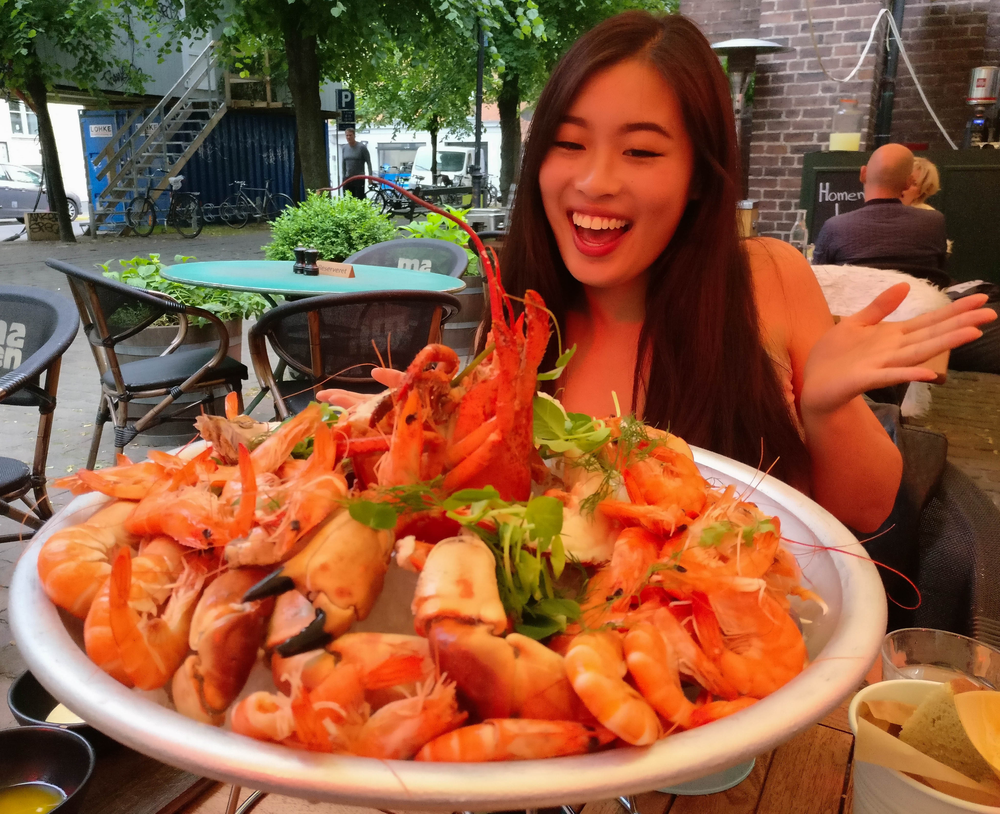

When people ask me how I met Rui I always laugh a little. If she's in the room I'll give her a smile, and ask her to tell the story. It's always fun trying to guess what version she'll tell.
Sometimes she says that we met in Rome, through our mutual friend Jack. She'll dryly recount how my first words to her were "Wow you look tired, are you okay?". (LINK THIS LATER). Other times she'll roll her eyes and explain how I drunkenly introduced myself at a party in Copenhagen, and then promptly forgot who she was. Either way she tells it, I come off as a real charmer.
To be honest, I don't remember meeting her in Copenhagen, but I do remember approaching a girl because I thought she was really cute.
The same thought ran through my mind when we met for the second time in a hostel in Rome. And then again when we were walking through the Colleseum together. And then again in the Vatican. And then again when we both went back to Copenhagen.
Eventually I stopped thinking just about her looks. I thought about her sweet personality, her excitablity, and her smile. After awhile I started thinking about the way that she overreacts to the little things that go wrong. Her gasps of surprise make her "The Girl Who Cried Mild Inconvenience". It's adorable.
As I'm writing this it's been two weeks since I last saw Rui, and I realize that it's those little things about her that I'll miss most. I didn't expect myself to catch feelings while on exchange, but I did. I had told myself that everything here was temporary, but sometimes emotions have a way of sneaking up on you.
Rui, I'm going to miss you. I'll miss going on ice cream runs, exploring Copenhagen, listening to Australian gossip, and our late nights at the library. I'll miss waking up next to you. But the world is a small place, and even though you're on the other side of it, it'll be worth the trip to go see you.